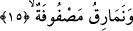
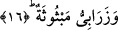

sağlamak içindir. Oysa ibrik böyle değildir. Böylesi bir kab şu anda bazı Arap
ülkelerinde kullanılmaktadır. Bundan dolayı böylesi bir kabın ifâde edilmesiyle âyette
teşvik sağlanmış olmaktadır. Bu kadehler cennetliklerin önlerinde hazır olup onların
bunları istemeye ihtiyaçları yoktur. Bu durum ğılmanın ellerinde bazı kadehlerin
bulunacağı gerçeğiyle çelişmez. Nitekim daha önce İnsan sûresinde geçmişti.
Okuduğumuz bu âyette mahabbet hamurunun kaplarına bunların içindekilerle birlikte
olduğu gibi kalacağına işâret vardır.
15. Sıra sıra dizilmiş yastıklar,
İstirahat etmek için kendisine yaslanacakları “sıra sıra dizilmiş yastıklar.” Bu
yastıklar dünyada ileri gelenlerin evlerinde görüldüğü üzere birbirine bitişik olarak sıra
sıra dizilmiştir. Dolayısıyla mü’min nereye oturmayı isterse onlardan birisinin üzerine
oturur, diğerine yaslanır. Ayrıca başucunda yakut ve mercan gibi güzel hizmetçi kızlar
vardır. Bu âyet-i kerimede tecrid, tefrid, cem’ ve tevhid’e işâret olunmaktadır. Onlar
nereyi isterlerse oraya oturup bunlara dayanırlar, yaslanırlar.
16. Serilmiş halılar vardır.
Bir zînet ve bir nimetlenme olsun diye tahtlar üzerine yayılıp serilmiş, lüks halılar
vardır. Rağıb Isfahânî’nin ifâdesine göre burada geçen ve “halılar” şeklinde tercüme
ettiğimiz ‘zerâbiy’ bir çeşit kumaş olup benzetme ve istiâre yoluyla belli bir yere
mensub; yâni orada yapılmış demektir.
Bu âyet-i kerimede onların ruhlarının yayılacağını, göğüslerinin rahata kavuşacağını
ve kalplerinin kudsiyet ve ünsiyet halılarına açılacağına işâret vardır. Ayrıca burada
sıfatların makamları altında, fiillerin tecelli makamlarına işâret vardır. Tıpkı
hoşnudluğun altında tevekkülün yayılması gibi. “Mebsûse” kelimesinin kökü olan
“bess” herhangi bir şeyi uçurup havaya kaldırmak ve dağıtmak demektir, rüzgarın
toprağı uçurup havada dağıtması gibi.
[84]. Bk. Müsned, V, 239; Deylemi, hadis no: 6624; Münavi, VI, 260
[85]. Müslim, Cennet 18